D’après une étude de Statista, le secteur du jeu vidéo a généré plus de 155 milliards de dollars américains de revenus dans le monde en 2021. Ce chiffre s’explique par l’augmentation du nombre de plateformes de jeux et de la diversification des types de jeux disponibles pour les consommateurs mais aussi en se démocratisant grâce à l’émergence de jeux gratuits. En 2022, les jeux vidéo ont attiré près de 1,8 milliard de joueurs à travers le globe, transformant ainsi l’expérience de divertissement en une dimension sociale et favorisant l’émergence de nouveaux secteurs comme le streaming et l’esport.
Or, tous ces jeux, biens que virtuels, sont exécutés sur du matériel physique, et induit donc une consommation énergétique. Cet article présente et compare les consommations énergétiques de différents jeux vidéo et de leurs paramètres. Pour connaitre la consommation réelle de ces usages, nous avons choisi d’évaluer les jeux vidéo suivants : Assassin’s Creed Valhalla, Total War Warhammer III, Borderlands 3, Anno 1800 et War Thunder.
Nous avons précédemment réalisé une étude sur les jeux mobiles.
Choix et méthodologie
Ces jeux vidéo ont été sélectionnés de par le fait qu’ils proposent un benchmark. Utiliser ces benchmarks comme sujet de mesure assure la réplicabilité de notre protocole expérimental, tout en s’affranchissant du facteur humain dans les résultats.
Un benchmark est une fonctionnalité proposée par le jeu permettant de mesurer les performances d’un système (PC entier), ou d’un de ses composants (CPU, GPU, mémoire …) selon un scénario donné en fonction du paramétrage sélectionné.
Nous avons également veillé à représenter plusieurs types de mode de jeu tels que RPG (jeu de rôle), stratégie ou simulation.
Nous avons mesuré ces jeux vidéo sur un PC disposant de la configuration suivante :
- Processeur: i7 6700
- Mémoire: 32 Go RAM DDR4
- Carte graphique: RTX 3060 12Go
Ce matériel nous a été fourni par l’entreprise OPP! qui propose de la réparation et maintenance sur PC et Mac ainsi que de la vente individuelle de composants.
L’écran utilisé est un écran LG E2441 disposant des caractéristiques suivantes:
- Technologie d’écran : LED
- Taille de l’écran : 24”
- Résolution : 1920×1080
Nous avons collecté les métriques d’énergie grâce à un module de mesure connecté à notre logiciel Greenspector Studio, branché directement sur l’alimentation du PC et de l’écran et relié à la prise secteur.
Les benchmarks ont été réalisés dans 2 configurations graphiques différentes :
- Une configuration avec un paramétrage maximal des graphismes proposés par le jeu
- Une configuration avec un paramétrage minimal des graphismes proposés par le jeu
6 itérations ont été effectuées sur chacun des scénarios pour assurer une fiabilité de résultats.
Les benchmarks durent entre 80 et 240 secondes. Ces variations n’affectent pas les résultats présentés.
L’évolution graphique impacte la puissance
Les jeux modernes intègrent des graphismes de plus haute qualité avec des textures ultra-détaillées, des effets visuels avancés tels que l’éclairage dynamique, les ombres en temps réel et les effets de particules sophistiqués. Cette complexité graphique nécessite des capacités de rendu et de traitement graphique considérables.
Les joueurs optent également de plus en plus pour des résolutions d’affichage élevées pour une expérience visuelle optimale. Cela place une pression supplémentaire sur le GPU (Graphics Processing Unit, la carte graphique) pour rendre des images détaillées à des résolutions ultra-hautes.
Ces GPU on des consommations énergétiques croissantes à chaque nouvelle génération comme celles de NVDIA classées ci-dessous :
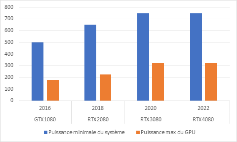
Evolution de la puissance minimale du système et la puissance max du GPU selon la date de sortie des GPU
Les développeurs exploitent des techniques de rendu avancées telles que le ray tracing pour simuler de manière réaliste le comportement de la lumière dans les environnements virtuels. Bien que ces techniques offrent un niveau de réalisme sans précédent, elles nécessitent des calculs intensifs qui exigent des GPU haut de gamme.
Différences de consommation selon le paramétrage
Les mesures de puissance moyenne du PC sur la configuration graphique la plus faible et la plus élevée de chaque jeu montrent une grande disparité entre celles-ci.
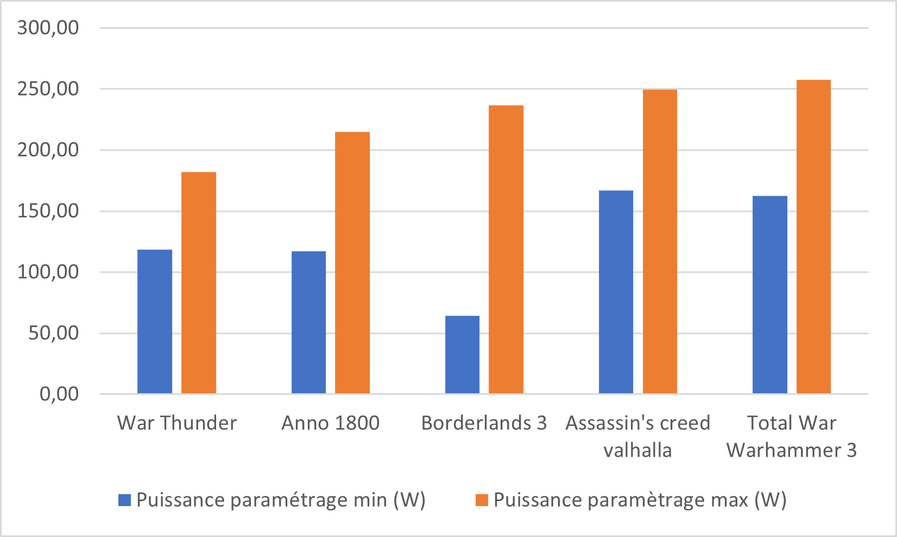
Puissance totale du PC en selon le paramétrage minimal ou maximal
Le fait de passer d’une configuration de paramètres maximale aux paramètres les plus faibles proposés par chacun des jeux résulte d’une diminution de puissance mesurée de 45% en moyenne. Pour le jeu Borderlands 3, on constate même un gain de puissance de 72%.
Sur le jeu Anno 1800, le benchmark est une vue aérienne panoramique de la carte du jeu. Cette séquence met en valeur les détails du monde du jeu, tels que les paysages, les bâtiments emblématiques et les animations de la vie quotidienne.
Ci-dessous les graphes d’une itération mesurée avec un paramétrage maximal et d’une autre itération avec paramétrage minimal. Le benchmark balaie la ville de son point de vue aérien zoomé au début puis la même trajectoire se répète 8 fois avec des points de vue de plus en plus hauts ce qui explique les 8 pics sur le graphe.
Ici, nous constatons facilement la différence notoire entre les 2 niveaux de paramétrage. Sur les deux paramétrages différents on voit d’abord que plus la caméra s’éloigne de la ville, plus la puissance se réduit étant donné le temps de plus en plus court du scénario.
De plus, lorsque le jeu est paramétré de manière maximale, la consommation est à son pic pendant presque toute la durée du scénario tandis que les mesures faites avec le plus faible paramétrage affichent des pics de puissance moins élevés et plus courts.
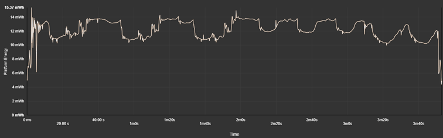
Consommation d’énergie du benchmark Anno 1800 avec paramétrage maximal
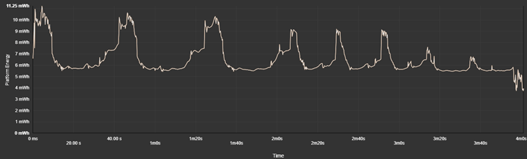
Consommation d’énergie du benchmark Anno 1800 avec paramétrage minimal
Une enquête Statista réalisée en décembre 2023 a révélé que 22 % des adultes américains âgés de 18 à 29 ans passaient de six à dix heures par semaine à jouer à des jeux vidéo. Dans l’ensemble, les personnes interrogées de ce groupe d’âge étaient également plus susceptibles que les autres d’être des joueurs assidus car un total de 8% jouait à des jeux vidéo plus de 20 heures en moyenne par semaine.
Ces chiffres nous permettent d’évaluer la consommation d’énergie globale selon les temps d’usage de différents types de joueurs dans le cas où le benchmark est représentatif de la consommation du jeu. La consommation d’énergie a été projetée avec les mesures faites sur les paramétrages minimum et maximums de chaque jeu.
La moyenne de consommation pour une heure de jeu en paramétrage minimal est de 0,168 kWh et 0,254 kWh en paramétrage maximal. Ces résultats sont plus élevés que ceux de l’étude européenne de l’évaluation de l’impact environnemental des services numériques. Celle-ci affiche une consommation de 0,137 kWh pour une heure de jeu sur PC avec une résolution moyenne.
| Consommation d’énergie sur 6h de jeu (Wh) | Consommation d’énergie sur 10h de jeu (Wh) | Consommation d’énergie sur 20h de jeu (Wh) | ||||
| Paramétrage | Min | Max | Min | Max | Min | Max |
| War Thunder | 1469,70 | 1460,78 | 2449,50 | 2434,64 | 4899,00 | 4869,28 |
| Anno 1800 | 843,26 | 1352,27 | 1405,43 | 2253,78 | 2810,86 | 4507,56 |
| Borderlands | 522,33 | 1537,53 | 870,55 | 2562,55 | 1741,09 | 5125,09 |
| Assassin’s Creed Valhalla | 1110,49 | 1618,73 | 1850,82 | 2697,88 | 3701,65 | 5395,76 |
| Total War Warhammer III | 1108,08 | 1651,01 | 1846,80 | 2751,68 | 3693,60 | 5503,37 |
La majorité des joueurs ont donc une consommation hebdomadaire comprise entre 1,5 kWh et 2,5 kWh en jouant entre 6 et 10h par semaine. Pour les joueurs davantage impliqués jouant 20h par semaine environ (2h40 par jour), leur PC et écran ont une consommation hebdomadaire de 5 kWh. A même titre de grandeur, un réfrigérateur classique consomme en moyenne 3,29 kWh par semaine.
Evolution selon les dates de sortie
Sur les configurations maximales, on note une évolution de la puissance mesurée proportionnelle à la date de sortie de ces jeux.
| Jeux | Sortie du jeu | Puissance avec paramétrage maximal (W) |
| War Thunder | Novembre 2012 | 181,86 |
| Anno 1800 | Avril 2019 | 214,94 |
| Borderlands 3 | Septembre 2019 | 236,62 |
| Assassin’s Creed Valhalla | Novembre 2020 | 249,46 |
| Total War Warhammer III | Février 2022 | 257,70 |
Dans ce contexte, les configurations maximales des jeux vidéo reflètent cette évolution technologique. Les développeurs de jeux conçoivent leurs jeux pour tirer parti des dernières avancées matérielles, ce qui se traduit par des exigences de plus en plus élevées sur les composants. Par conséquent, pour profiter pleinement des performances graphiques et de la fluidité de jeu, les joueurs doivent souvent investir dans du matériel informatique de pointe.
Ces graphismes complexes et détaillés nécessitent un rendu en temps réel qui repose souvent sur le CPU pour effectuer des calculs liés à la physique, à l’intelligence artificielle des personnages non-joueurs, à la gestion des collisions et à d’autres aspects du gameplay.
C’est ce qu’explique un directeur technique du jeu Total War dans une interview d’Intel :
« Nous modélisons des milliers de soldats avec un niveau de détail élevé appliqué à chacun en matière d’animations, d’interactions, de décisions de pathfinding, etc. »
Dans les jeux vidéo, le pathfinding consiste à trouver comment déplacer un personnage d’un point A à un point B en tenant compte de l’environnement : obstacles, autres personnages, longueur des chemins, etc.
En outre, le processeur jongle souvent entre de nombreuses tâches simultanément en fonction de ce qui s’affiche à l’écran. « Prenons une scène où deux immenses fronts comptant des milliers de soldats se fracassent l’un contre l’autre, et où vous avez effectué un zoom assez rapproché » explique le directeur technique du jeu. « Dans cette situation, le processeur se partage principalement entre les combats basés sur des agents d’entité, les mécanismes de collision et la construction des piles de matrices afin de dessiner toutes les entités. »
En d’autres termes, le processeur doit gérer simultanément la présence et les interactions de milliers de PNJ (personnages non joueurs).
De plus, plus les graphismes sont avancés, plus le GPU est sollicité pour traiter les données et les instructions de manière efficace, ce qui peut entraîner des goulots d’étranglement et des ralentissements si le processeur n’est pas assez puissant.
Sur le jeu Assassin’s Creed Valhalla, lorsque le paramétrage est au plus faible, la carte graphique est sollicitée à 46% en moyenne. A l’inverse, sur un paramétrage maximal avec par exemple les reflets sur l’eau activés ou la qualité des nuages maximale, la carte graphique est utilisée à 99% pendant le benchmark.
Optimisation vs qualité graphique
Nous venons de voir que le paramétrage d’un jeu réglé à son maximum implique de grosses consommations d’énergie. Cependant, les effets visuels en sont-ils améliorés ? Tous les paramètres sont-ils pertinents pour l’expérience de jeu selon la configuration du PC ?
Un indicateur intéressant pour répondre à ces questions est le nombre d’images par secondes (FPS) car il est souvent utilisé comme indicateur de la fluidité d’un jeu : plus les FPS sont élevés, plus le jeu paraît fluide et réactif.
Le FPS (Frame Per Second), c’est le nombre d’image par seconde indique le nombre d’images individuelles (ou « frames ») affichées à l’écran chaque seconde.
En effet, plus une image est lourde à générer et afficher en fonction de sa complexité, moins le processeur et la carte graphique peuvent être rapides à les afficher. Ainsi, lorsque le paramétrage dépasse les capacités de la configuration du PC, l’effet visuel pour le joueur n’en est pas forcément amélioré.
D’autant plus, le gameplay peut en être impacté par le phénomène de bottleneck.
Le bottleneck ou goulot d’étranglement en français, c’est un phénomène produit par un composant matériel ou logiciel de performance limitée par rapport à d’autres composants plus performants. Cela signifie qu’une partie du système fonctionne à une capacité maximale, tandis que d’autres parties ne peuvent pas suivre, ce qui entraîne une baisse des performances globales.
En équilibrant correctement la configuration matérielle et en ajustant les paramètres graphiques en conséquence, les joueurs peuvent minimiser les risques de ralentissements et de saccades, offrant ainsi une expérience de jeu plus agréable et immersive.
Voici quelques différences de benchmarks réglés au maximum de leurs paramètres de jeu puis au minimum :
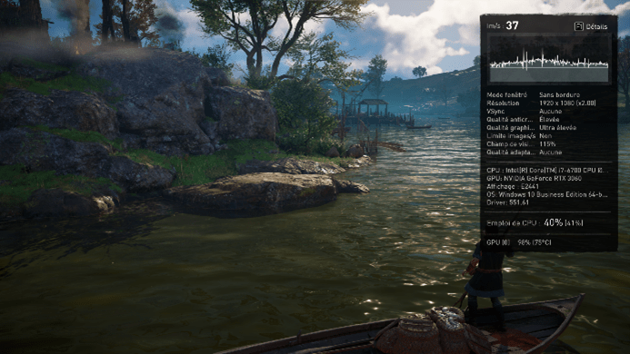
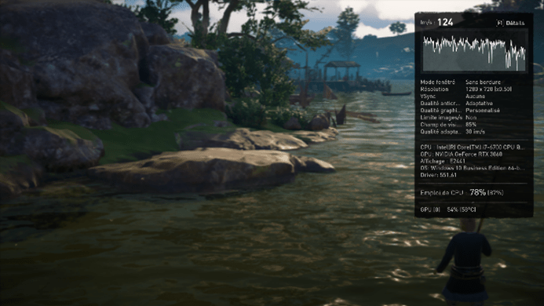
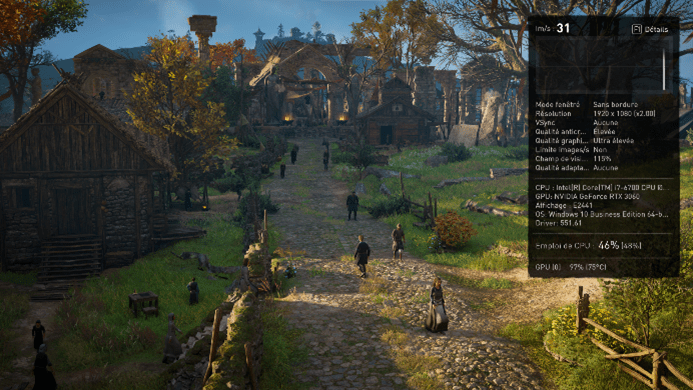
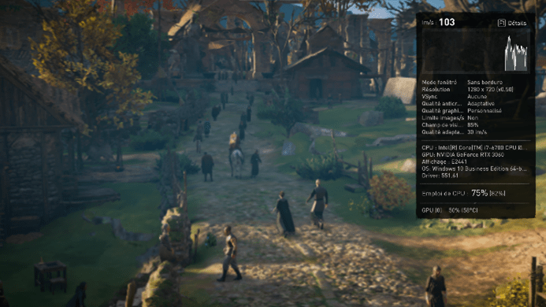
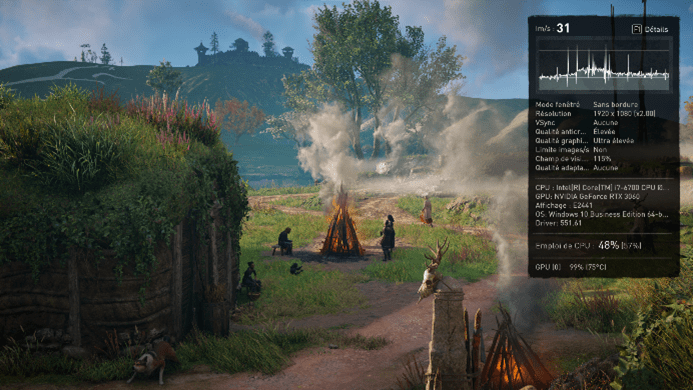
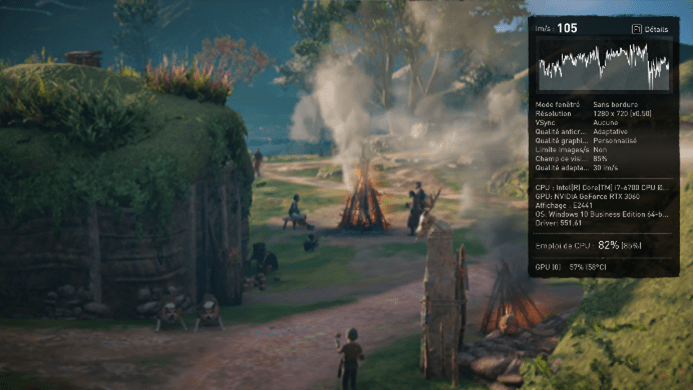
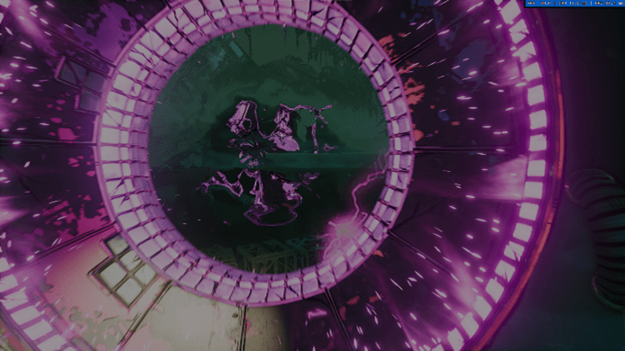
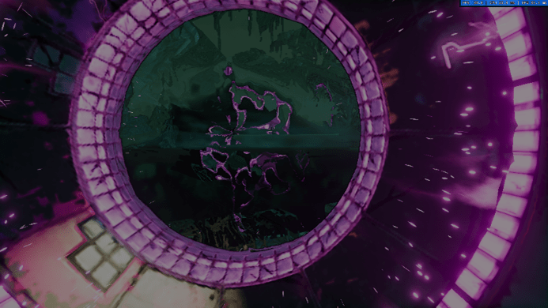
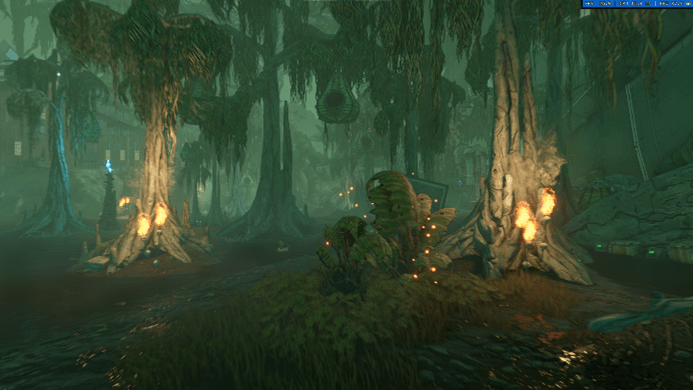
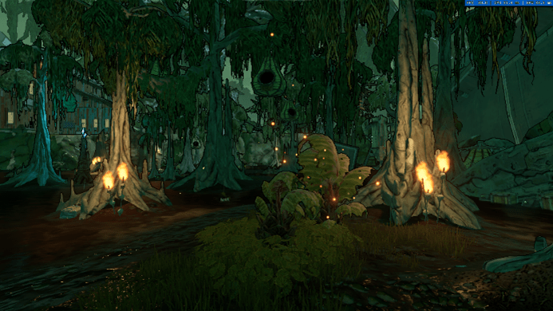
Implications pour le matériel et impact environnemental
L’évolution constante des jeux vidéo vers des expériences toujours plus immersives et réalistes a des implications significatives pour le matériel utilisé. Les développeurs de jeux cherchent à exploiter pleinement les capacités graphiques et de traitement des nouvelles technologies, ce qui se traduit par des exigences matérielles plus élevées.
En France, l’année 2020 est marquée par la vente de 2,3 millions de consoles, 27,5 millions de jeux complets (Console + PC / physique + dématérialisé) et près de 7 millions d’accessoires (Console + PC). Avec une croissance de 10%, l’écosystème Console représente 51% de parts de marché total du jeu vidéo et le PC Gaming croît de 9%. (Source : Sell)
Les joueurs cherchent à rester à la pointe de la technologie pour profiter pleinement des dernières sorties. Au-delà de l’enjeu financier que cela peut représenter, cette quête de performances matérielles est également très critique d’un point de vue environnemental.
Nous l’avons vu, il faut que tous les composants d’une configuration soient environ au même niveau de performance pour bénéficier d’une expérience de jeu optimisée. Si le joueur possède une carte graphique très performante mais un écran de plus faible résolution, un processeur ou une carte mère moins puissants, l’expérience de jeu n’en sera pas forcément améliorée voire altérée. L’intérêt d’un point de vue optimisation n’est donc pas d’acheter des composants de dernière génération pour améliorer ses performances mais d’optimiser au mieux les paramètres du jeu selon la configuration de son matériel. Cela permet d’une part de rallonger leur espérance de vie avec une sollicitation moindre mais aussi en améliorant l’expérience de jeu pour les utilisateurs.
La sur-sollicitation fait chauffer les composants comme la carte graphique ou le processeur à de hautes températures à cause de la quantité de calculs gérés par ces derniers et endommage leurs transistors et puces impliquant donc la réduction de leur durée de vie.
La durée de vie d’un PC de bureau moyen dure entre 2 et 3 ans selon HP, et celle d’un PC gamer entre 3 et 5 ans.
Nous n’avons pas d’informations au sujet de l’impact environnemental de la fabrication d’un PC gamer mais la fréquence de sortie tous les ans des produits dernière génération poussant les joueurs à renouveler tous les ans leur configuration de PC augmente considérablement l’impact de cette industrie.
Il est à noter que les consoles de jeu ne sont pas en reste dans l’empreinte carbone.
Ben Abraham, chercheur sur le climat et la durabilité, analyse l’unité centrale de traitement de la PlayStation 4 en utilisant la spectrométrie de masse, révélant la présence de composants atomiques comme le titane, dont l’extraction, le raffinage et la fabrication contribuent aux émissions de gaz à effet de serre.
Cette observation souligne le défi de rendre durable la production de ces appareils, avec des décennies nécessaires pour atteindre cet objectif.
L’importance de la mesure
Les éditeurs de jeux vidéo jouent un rôle crucial dans la réduction de l’empreinte environnementale de l’industrie. Pour ce faire, il est impératif de prendre en compte les consommations d’énergie tout au long du processus de développement des jeux.
Tout d’abord, mesurer les consommations d’énergie permet aux éditeurs de jeux de comprendre l’impact environnemental de leurs produits. Cela inclut non seulement la consommation d’énergie directe des appareils sur lesquels les jeux sont exécutés, mais aussi pourquoi pas l’empreinte carbone liée aux serveurs de jeu, aux mises à jour et téléchargements.
Ensuite, cette prise de conscience permet aux développeurs de jeux de concevoir des mécaniques de jeu et des graphismes qui optimisent l’efficacité énergétique. Par exemple, en minimisant les effets visuels complexes qui nécessitent une puissance de calcul élevée, les jeux peuvent réduire leur consommation d’énergie tout en offrant une expérience de jeu immersive.
Le sujet de l’empreinte environnementale des jeux vidéo est de plus en plus pris en compte par les éditeurs, ce qui est encourageant. Des initiatives telles que le Green Games Guide de l’Ukie ou celui de l’Ecran d’après offrent des conseils pratiques et des bonnes pratiques pour réduire l’impact environnemental de la conception et du développement de jeux. De même, des outils comme le Xbox Sustainability Toolkit de Microsoft ou Jyros, l’outil de mesure d’impact environnemental dédié à l’industrie du jeu vidéo en France, fournissent aux développeurs des moyens concrets d’évaluer et d’améliorer la durabilité de leurs jeux.
Cependant, il est important de généraliser ces pratiques et de les intégrer de manière plus systématique dans l’ensemble de l’industrie. Trop souvent, l’aspect environnemental est relégué au second plan, tandis que l’accent est mis sur la performance et l’esthétique des jeux. Il est donc essentiel que les éditeurs prennent davantage en compte les implications environnementales de leurs décisions de conception et de développement.
Limites de l’étude
Dans le cadre de cette étude, il est important de reconnaître certaines limites qui pourraient affecter la portée et la représentativité des résultats obtenus :
- Partenariat entre constructeur et concepteur : Il est possible que certains jeux vidéo aient établi des partenariats avec des fabricants de matériel informatique pour optimiser leurs performances sur des configurations spécifiques. Ces accords pourraient fausser les résultats du benchmark en favorisant certaines marques ou modèles de composants. Ces résultats peuvent altérer les comparaisons entre jeux, mais pas les comparaisons entre configurations d’un même jeu.
- Scénario de benchmark pas forcément représentatif des modes de jeu : Les scénarios de benchmark utilisés pour évaluer les performances des jeux vidéo peuvent ne pas refléter les conditions de jeu réelles. Par exemple, un benchmark peut se concentrer sur des séquences spécifiques du jeu qui ne représentent pas nécessairement le gameplay général. Par conséquent, les résultats obtenus peuvent ne pas être entièrement représentatifs de l’expérience de jeu globale.
- Pas de mesure du mode multijoueur ou du jeu en ligne : Cette étude se concentre principalement sur les performances des jeux en mode solo et ne prend pas en compte les aspects liés au multijoueur ou au jeu en ligne. Par conséquent, les échanges de données entre les serveurs de jeu et les clients, ainsi que les performances réseau, ne sont pas pris en compte dans l’analyse. Cela pourrait limiter la compréhension complète des besoins matériels pour une expérience de jeu en ligne optimale.
Conclusion
En conclusion, cette étude met en lumière l’impact croissant des jeux vidéo sur les performances matérielles des ordinateurs. Avec l’évolution constante des graphismes et des fonctionnalités, les jeux modernes exigent des configurations matérielles de plus en plus puissantes pour offrir une expérience de jeu optimale. Cela soulève des questions importantes sur la durabilité et l’efficacité énergétique des équipements informatiques, ainsi que sur les choix des consommateurs en matière de matériel. En fin de compte il est crucial, tant pour les éditeurs que pour les joueurs, de trouver un équilibre entre les performances des jeux vidéo et la durabilité de l’industrie technologique pour assurer un avenir plus durable.